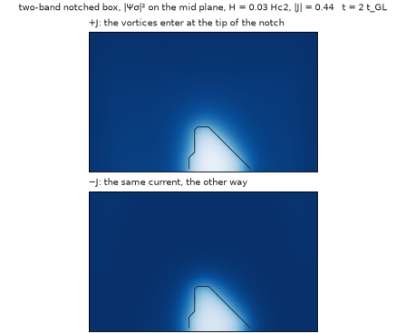
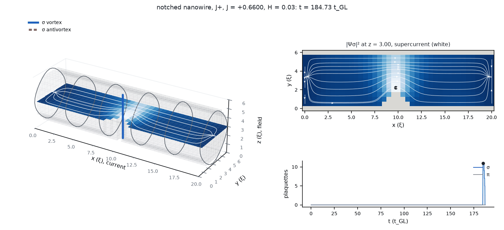
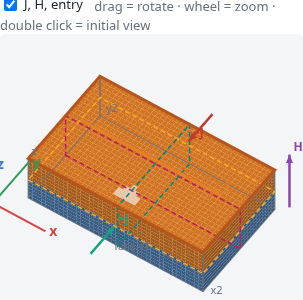

Examples
One run file per option in tdgl2/examples/, each run by one command. Times are on one core of a laptop. The
short ones are demonstrations of an option, not measurements.
OPENBLAS_NUM_THREADS=1 julia --project=tdgl2 tdgl2/scripts/run.jl tdgl2/examples/<file>.tomlThe run files
| file | what it shows | time |
|---|---|---|
wedge_k25.toml | the two-band notched box at κ = 25 and H = 0.03 Hc2 | minutes |
kwt_k2.toml | KWT with γ̃ = 10 at κ = 2 and the onset by the delay: (0.73, 0.74] and (0.75, 0.76], η = −1.3 % | ~1 h (35 min in two processes) |
open_k2.toml | the open boundary of the self-field | 13 min |
insulating_k2.toml | the insulating buffer (sigma_vac): all of the current crosses the sample | 35 min |
heat_k25.toml | heat with Joule and a contact margin, and drag: (0.3, 0.4] and (0.5, 0.6] | 16 min |
three_bands.toml | three bands with frustrated couplings: the time-reversal-breaking state | 6 min |
cable_k2.toml | a sculpted sample: a nanowire in vacuum along the current | 10 min |
bicapa_tunel.toml | a material per region: a tunnel-coupled bilayer (t = 0.2) | 2 min per polarity |
metal_una_banda.toml | a two-band superconductor with a one-band normal-metal lead; the σ condensate enters the metal by proximity | minutes |
The notched box
A box of two bands with a wedge cut into its face y1. With the field along z and the current along x, vortices enter through y1 for +J and through y2 for −J. The notch lowers the barrier on one side only, so the two onsets differ.

wedge_k25.toml at |J| = 0.44: +J on top, −J below. For +J the vortices are born at the tip and cross; for −J at the
same |J| almost none do.A sculpted nanowire
A disc of radius 2.75 ξ along the current, with vacuum around it and leads of its own section. The vacuum needs the insulating buffer. J is the current density, so the cable carries J times its meshed section.

scripts/film.jl: a vortex of the σ band crossing a notched nanowire carved in vacuum. On the left, in
3D, the outline of the cylinder, the mid plane coloured by |Ψσ|² and the supercurrent in white; on the right, the mid
plane from above and the vortex plaquettes against time.Materials per region
bicapa_tunel.toml stacks two slabs of 3 ξ along z: the two-band model at κ = 2 below, and above it a slower material
with a quarter of the diffusivity in both bands and a weaker σ band. A barrier of transparency 0.2 joins them. The shape file names
the upper region material = "lenta", and the run file defines it in a [materials.lenta] table: inline bands,
or a material file of the catalogue (file = "mgb2_dirty.toml").

KWT, boundaries, heat, three bands
kwt_k2.toml: KWT in both bands raises the onset by the conversion partition. The stepper turns on the rotating frame and the stabilised stages by itself.open_k2.toml: the faces see the free-space field of the screening currents, which a mirror face suppresses at small κ. The two polarities separate more.heat_k25.toml: a temperature field with the Joule term and the contact layers left out of the source, and interband drag. A rung whose temperature passes the cut closesTand ends the ladder.three_bands.toml: three identical bands with equal repulsive couplings. The phases settle at 0 and ±2π/3, and |Ψ|² = 1 + |γ| per band.